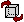
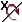
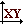
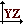

Sentaurus Visual
4. Visualizing 3D Structures
4.1 Rendering Controls
4.2 Rotating Structures
4.3 Predefined View Planes
Objectives
- To introduce the controls for visualizing 3D structures in Sentaurus Visual.
4.1 Rendering Controls
To follow this section, download the following file by right-clicking and choosing Save Target As:
Depending on computer performance, availability of hardware acceleration, and network speed, working with large 3D plots can be a slow process. To improve this, Sentaurus Visual provides a fast draw option for rendering plots. This option draws only the boundaries of a 3D plot when it is manipulated, which has a large impact on performance.
To enable fast draw:
- Choose View > Fast Draw or click the  toolbar button.
When the mouse is released at the end of a rotation or zoom, the full structure is rendered again with material-colored and field-colored contours.
{kind=link}
Figure 1. Using fast draw only the boundaries of the structure are shown. (Click image for full-size view.)
By default, fast draw is switched on. To switch it off for the session:
- Choose View > Fast Draw or click the toolbar button.
To switch it off permanently, in the User Preferences dialog box (see Section 1.8 User Preferences), navigate to 2D/3D > Rendering, and clear the Enable Fast Draw option.
Fast draw introduces a delay between releasing the mouse button and re-rendering the structure. By default, the delay is 0.5 seconds. The delay can be changed in the User Preferences dialog box.
4.2 Rotating Structures
Three-dimensional plots can be rotated freely over a rotation point or rotated around a fixed axis.
To select free rotation, click the Select/Rotate button . Drag to rotate the structure.
To rotate around one of the Cartesian coordinate axes, click the corresponding toolbar button: , , .
Alternatively, as you move the mouse, hold the X key to rotate around the x-axis, hold the Y key to rotate around the y-axis, or hold the Z key to rotate around the z-axis.
To set a rotation origin, use the camera configuration by either choosing View > Camera Configuration, or placing the mouse on the required point and pressing the 0 key. The new rotation origin will be temporarily indicated by a red circle and three axis-aligned lines.
4.3 Predefined View Planes
To facilitate the viewing of complex 3D structures, Sentaurus Visual has toolbar buttons to show a plot in one of the axis-aligned planes:
| Button | Description |
|---|---|
|  | Shows a 3D plot in the xy plane. |
|  | Shows a 3D plot in the yz plane. |
| Shows a 3D plot in the xz plane. |
Copyright © 2022 Synopsys, Inc. All rights reserved.